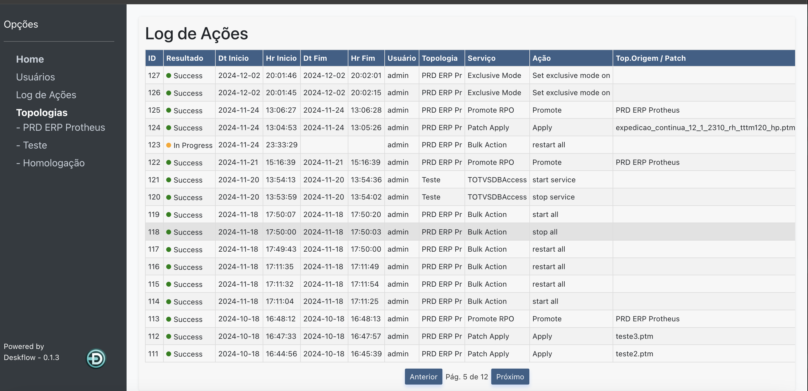
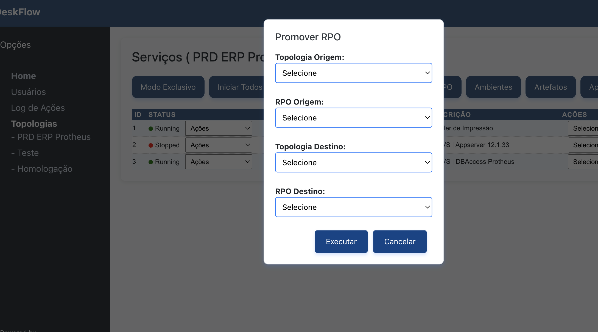

Por que Deskflow?

🔒 Segurança Avançada
Gerencie permissões e elimine o uso de RDP desnecessário.

⚡ Agilidade
Automatize processos como aplicação de patches e reinício de serviços.

🌐 Acesso Universal
Gerencie seu ambiente em qualquer lugar, seja On-Premise ou Cloud.